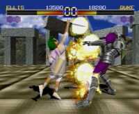

|

Review

Game Type: 3D Fighting
On a two-dimensional level Toshinden is a simplistic Street Fighter II
clone, complete with fireballs and flashing kicks. What makes it unique
is that it's not only 3D in the sense that the camera can view from any
angle. There is limited movement in a third dimension; in addition to
moving backwards and forwards and jumping the characters can roll in
or out of the plane they're fighting on, allowing them to dodge attacks
or move in from a different angle.
Gameplay: 85/100
Decent, though not as addictive as Tekken. The controls live up to
fighting game standards. I keep playing Toshinden because of the new
strategy 3D movement adds. It's great fun to lure your opponent to the
side of the arena and then dodge aside as he charges off the edge. (And
then to laugh at your own character as he falls off while doing his
ending taunt.)
Graphics: 90/100
The game is beautiful to look at, more so than its sequel. The characters
are Gouraud shaded, the backgrounds are real-time rendered in polygons,
and everything is colored in vivid shades. The unfortunate side effect of
such complex graphics is a low framerate and occasional slowdown.
Sound: 40/100
Bleah. While some tracks sound decent, complete with electric guitars,
others have an obnoxious big-band sound. The sound effects are equally
annoying, with many special moves accompanied by clips straight from a
Warner Bros. cartoon. Some characters' voices (Sofia, Ellis) are really
a pain to listen to.
Overall: 90/100
Hmmm... you would think my overall score would be an average of the
three above. Not so with Toshinden. I should probably hate this game but
some intangible element keeps me playing. Don't rush out and buy this
game but do give it a try. You might find yourself hooked, too.
Game Shark Codes
- By jay@mcgavren.com
- Player 1 can hover with L2 button
- D01CA6F0 0001 + 801D35D2 FD80
- Player 2 can hover with L2 button
- D01CA6F2 0001 + 801D45C2 FD80
Codes
- Play as Gaia
- ATS as the main menu text is sliding in press D, D and L, L, S. At the
character select screen highlight Eiji, hold U, and press any button.
- Play as Sho
- Enter the Gaia code above. Play as Gaia and lose to the computer.
ATS as the main menu text is sliding in press R, L, R, L, S on
Controller 2. At the charcter select screen highlight Kayin, hold
D, and press any button.
- Instant Secret Moves
- Enter the Gaia and Sho codes above and let the intro sequence begin.
ATS as the main menu text is sliding in press D, L, and X on Controller
1. In the options menu set the control type to E4. During a game press
L1, L2, R1, R2, and Select to execute a secret move.
- Instant Special Moves on Any Difficulty
- Enter all the codes listed above and let the intro sequence begin. ATS as
the main menu text slides in press LRLRLS on Controller 2. In the Options
menu you can now set any control configuration on any difficulty level,
including those with special moves assigned to the top buttons.
- Instant Desperation Moves
- Assign special moves to the top buttons in the Options menu. During a
game when your character's life gauge is flashing press L1, L2, R1, and
R2 simultaneously.
- Hide Pause Options/Life Gauges
- During a game pause and press S, T, X, C, and Select simultaneously.
Repeat to hide the life life gauges, and repeat again to reveal them. You
can unpause and continue playing with the life gauges hidden.
- Slow Motion
- Hide the pause options menu using the code above, then hold Select on
Controller 2.
- Adjust Camera
- In the Options menu set the control type to A2. Go to the camera option
and select the new setting "Your Self". Go back to the control type and
and any of the new settings that assign "Camera X/Y" to the top buttons.
During a game press L1, L2, R1, or R2 to adjust the camera angle.
- Fight Sho
- To encounter Sho you must fight through the game on the Hard level
without continuing. Beat Sho to see the real ending.
Moves List
From the
GameSages archive
Following are all the moves the various characters can perform. Desperation
moves can only be performed when your character's energy bar starts flashing.
Keypad/button abbreviations
F = Forward/Right
D = Down
B = Back/Left
U = Up
WS = Weak Slash (Square)
HS = Hard Slash (Triangle)
WK = Weak Kick (Cross)
HK = Hard Kick (Circle)
Select = Alternate costume colours (while selecting character)
Start = Pause and Options menu (while playing)
L1 = Roll out
R1 = Roll out
L2 = Roll in
R2 = Roll in
, = denotes an individual press
+ = designates these must be pressed simultaneously
tap = indicates the keypad must be lightly tapped (not pressed)
hold = designates that the last button should be held until noted
General moves
Dash Forward: tap F, tap F
Run Forward: tap F, hold F
Backstep: tap B, tap B
Roll Sideways: tap D, tap D
Throw/Close Attack: B + HS or HK
Eiji Shinjo
Rekkuu Zan: D, DF, F + WS
Hishou Zan: F, D, DF + WS
Ryuu Sei Kyaku: while jumping D, DB, B + WK
Ryuu Geki Dan: DF + WK
Throw: when close to opponent B + HS or HK
Desperation Move: F, DF, D, DB, B, DB, D, DF, F + HS
Secret Move: U, D, U, D, F, B, F, B + HS
Kayin Amoh
Sonic Slash: D, DF, F + WS
Deadly Raise: F, D, DF + WS
Raging Sun: while jumping D, DB, B + WK
Shoulder Crush: D, DB, B + WK
Throw: when close to opponent B + HS or HK
Desperation Move: F, DF, D, DB, B, DB, D, DF, F + HS
Secret Move: F, DF, D, DB, B, DB, B, F, B + WK + HK
Sofia
Thunder Ring: D, DB, B + WS
Aurora Revolution: F, DF, D, DB, B + WS
Rattle Snake: D, DF, F + WS
Laugh Taunt: F, DF, D, DF, F, B, D + HS + WK
Face Slap: when close to opponent B + HS or HK
Desperation Move: F, B, F, B + HS
Secret Move: DF, D, DB, D, DF, B, F, D + HS + HK
Rungo Iron
Shima to Daichi no Ikari: D, DF, F + WS
Daichi no Mezame: F, D, DF + WK
Daichi no Otakebi: F, DF, D, DB, B + WS
Daichi no Ikari: D, DF, F, B + WS
Head Butt: when close to opponent B + HS or HK
Desperation Move: B, DB, D, DF, F, DF, D, DB, B + HS
Secret Move: UF, U, UB, B, DB, F, B, D + HS + HK
Fo Fai
Don Pappa: F, DF, D, DB, B + WS
Kappo Re: D, DB, B + WK
Don Don Pappa: while jumping F, DF, D, DB, B + WS
Don Do Ko Shu: B, DB, D, DF + WS
Small Fart: F, UF, U, UB, B + WS + HK
Laugh Taunt: F, DF, D, DF, F, B, D + HS + WK
Claw Flip Throw: when close to opponent B + HS + HK
Desperation Move: F, B, DB, D, DF, F, B + HS
Secret Move: WK, WS, HS, HK, B, F, B, F + HS + HK
Mondo
Gou Riki Ten Bu: F, D, DF + WS
Gou Riki Fuu Jin: B, DB, D, DF, F + WS
Gou Riki Rai Jin: while jumping D, DF, F + WS
Shitsu Buu Zu Ki (JyoDan): D, DF, F + WS
Shitsu Buu Zu Ki (GeDan): D, DB, B + WS
Spear Skewer: when close to opponent B + HS or HK
Desperation Move: D, DF, F, D, DF, F, B + HS
Secret Move: F, UF, U, UB, B, F, DF, D + HS + HK
Duke B Rambert
Southern Cross: B, F, DF, D + WS
Death: D, DF, F + WS
Helm Crush: while jumping D, DF, F + WS
Ogre Slash: F, DB, D, DF + WS
Knee Bash: when close to opponent B + HS or HK
Desperation Move: DB, D, DF, F, B + HS
Secret Move: DF, D, DB, D, DF, D, B, F + WS + HK
Ellis
Homing Swallow: D, DB, B + WK
Soar Window: F, D, DF + WS
Screw Dancing: while jumping D, DB, B + WK
Arc Slash: while jumping D, DB, B + WS
Ribbon Toss: F, UF, U, UB, B + WS + HK
Drop Kick: when close to opponent B + HS or HK
Desperation Move: F, B, F, B + WS
Secret Move: DF, D, DB, D, DF, B, F, D + HS + HK
Gaia
Full Steam: B, DB, D, DF, F + WS
Sea Slash: F, B, DF + WS
Arm Blast: F, DF, D, DB, B + WK
Desperation Move: F, DF, D, DB, B, F + HS
Secret Move: DF, D, DB, D, DF, B, F, D + HS + HK
Sho Shinjo
Double Rekku Zan: D, DF, F + WS
Hishou Zan: F, D, DF + WS
Shoulder Crush: D, DB, B + WK
Ryuu Sei Kyaku: while jumping D, DB, B + WK
Raging Sun: while jumping D, U + WK
Throw: when close to opponent B + HS or HK
Desperation Move: F, DF, D, DB, B, DB, D, DF, F + HS
Secret Move: D, F, UF, U, UB, B, D + HS + WK
|